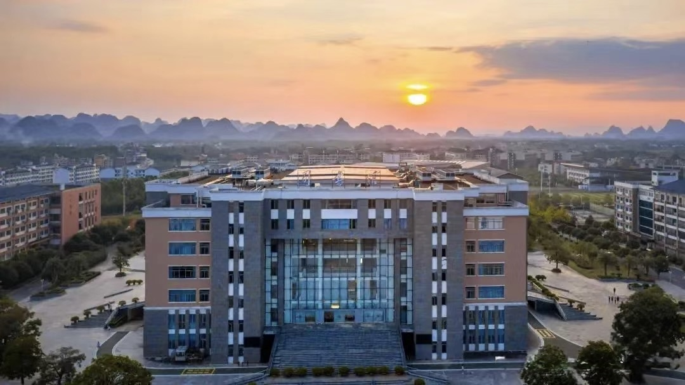

University of Glasgow (UofG)
United Kingdom Sep 2020 - Sep 2021
MSc Geoinformation Technology & Cartography
Relevant Modules: Geospatial Fundamentals, Principles of GIS, Land Surveying,
Topographic Modelling and Landscape Monitoring, Applied GIS, Geospatial Data Infrastructures and
Land Administration, Principles of Cartographic Design & Production, Visualisation & Map Use,
Web and Mobile Mapping, Remote Sensing of the Environment, Academic and Professional Skills for GES PGT, MSc Project.
GPA: --
Avg. Score (100% Scale): --
Level: --
Learned Skills:
1. Programming Languages and GIS Development
Python Programming
- GIS Automation: Automate GIS data processing workflows, including data cleaning, format conversion, and spatial analysis, by writing Python scripts, significantly improving efficiency.
- ArcPy Library: Integrate ArcPy with ArcGIS to enable batch processing of spatial data and automated generation of maps and reports, meeting large-scale data processing needs.
- Data Analysis: Utilize Python libraries such as Pandas and NumPy for statistical analysis of spatial data, supporting decision-making and scientific research.
Related Work:
Download Report (PDF) |
View HTML Version
R Language
- Spatial Statistical Analysis: Use R for statistical modeling and visualization of geospatial data, suitable for research in ecology, environmental science, and related fields.
- Ecological and Environmental Research: R is widely used in remote sensing data processing and environmental modeling, effectively supporting ecological monitoring and resource management.
JavaScript
- Web Map Development: Develop interactive web maps using JavaScript libraries (e.g., Leaflet, OpenLayers, Mapbox GL JS), providing dynamic and user-friendly geospatial data visualization.
- Front-End Development: Combine HTML, CSS, and JavaScript to build front-end interfaces for geographic information systems, enabling data interaction and visualization.
CodePen Projects:
Project 1 |
Project 2 |
Project 3 |
Project 4 |
Project 5
2. Geospatial Databases and Programming
SQL and Spatial Databases
- PostGIS: Learn to use the PostGIS extension in PostgreSQL to manage spatial data and perform complex spatial queries, supporting efficient geospatial data analysis.
- Spatial Indexing and Optimization: Optimize query performance in spatial databases through programming, enhancing the processing efficiency of large datasets.
NoSQL and Big Data
- MongoDB: Handle unstructured geospatial data, suitable for storing and managing large-scale datasets.
- Hadoop and Spark: Process massive spatial data using geospatial analysis tools (e.g., GeoSpark), supporting distributed computing and high-performance analysis.
3. Remote Sensing Data Processing and Programming
Remote Sensing Image Processing
- GDAL/OGR: Use the GDAL library to read, process, and analyze remote sensing image data, supporting operations on various remote sensing data formats.
- Python and Remote Sensing: Combine Python libraries such as Rasterio and EarthPy to process satellite and drone imagery, supporting environmental monitoring and resource management.
Machine Learning and Remote Sensing
- Classification and Prediction: Use Python’s Scikit-learn, TensorFlow, or PyTorch for remote sensing image classification (e.g., land use classification) and prediction (e.g., climate change models).
- Deep Learning: Train deep learning models for object detection and segmentation in high-resolution remote sensing images, enabling precise environmental monitoring and analysis.
4. Geographic Information System (GIS) Skills
- GIS Software Operation: Proficiently use industry-standard GIS software (e.g., ArcGIS and MapInfo) for spatial data collection, management, analysis, and visualization.
- Spatial Data Analysis: Master the fundamental principles and methods of spatial data analysis, enabling the processing and analysis of geospatial data to solve real-world problems.
- Geospatial Data Management: Understand and manage geospatial data infrastructure, including data storage, sharing, and updates.
- Land Surveying: Conduct precise land surveying using advanced tools and techniques, including GPS and Total Station, to collect accurate spatial data for mapping and analysis. Proficient in processing and interpreting survey data to support infrastructure planning and development.
Related Work:
Download Land Surveying Report (PDF)
|
Download Garscube Report (PDF)
5. Cartography and Data Visualization
- Map Design and Production: Master the fundamental principles and techniques of modern cartographic design, enabling the creation of high-quality map products.
- Data Visualization: Learn how to effectively present complex geospatial data through charts, maps, and other visualization tools, aiding decision-makers and the public in understanding data.
- Web and Mobile Mapping: Develop skills in creating interactive map applications for web and mobile platforms.
Related Work:
Download Report (PDF)
6. Remote Sensing Technology
- Remote Sensing Data Processing: Learn to acquire and process environmental data using remote sensing techniques, mastering the methods for processing and analyzing remote sensing imagery.
- Environmental Monitoring: Conduct terrain modeling and landscape monitoring through remote sensing, enabling the analysis of environmental changes and natural resource management.
Guilin University of Technology (GLUT)
China Sep 2016 - Jun 2020

Geographic Information Science (GIS) | Served as class president
Relevant Modules: Geometrics, Advanced Mathematics, Linear Algebra, Principles of Geographic Information System,
C Programming Language, Cartography, Digital Photogrammetry, C# Object-Oriented Programming, MATLAB Programming and Applications,
Spatial Analysis Theory and Method, Digital Cartography, Remote Sensing Technology and Application, Virtual Reality Modeling & Three-Dimensional,
Secondary Development of GIS, Computer Networks, Spatial Database Design Practice.
GPA: 3.4/5
Avg. Score (100% Scale): 84
Top 5% in the cohort
Learned Skills:
1. Foundational Theory and Technical Competencies
- Spatial Data Acquisition: Proficient in traditional surveying instruments (e.g., total stations, GPS) and modern technologies (e.g., UAV, LiDAR).
- GIS Core Skills: Designed spatial databases, applied remote sensing (ENVI/ArcGIS) for environmental monitoring, and conducted spatial analysis (buffer/network analysis).
2. Modern Surveying and Geospatial Technologies
- Intelligent Surveying: Integrated AI for automated feature recognition and 3D modeling (ContextCapture).
- BeiDou/GNSS: Applied satellite positioning for precision engineering (e.g., bridge deformation monitoring).
3. Engineering Applications
- Infrastructure Projects: Participated in simulations of large-scale projects (e.g., tunnels, dams) for layout and deformation analysis.
- Geospatial Development: Developed GIS plugins using C# and Python, and built WebGIS platforms (Leaflet/OpenLayers).
4. Interdisciplinary Integration
- Resource Management: Analyzed forest dynamics using RS/GIS and designed spatiotemporal big data platforms.
- AI & Big Data: Applied machine learning (TensorFlow) for spatial prediction and traffic flow modeling.
5. Practical Capabilities
- Field Operations: Conducted GNSS surveys and LiDAR data processing in provincial labs (e.g., Guangxi Spatial Information Lab).
- Project Management: Led cross-disciplinary teams to align with industry standards (e.g., surveying regulations).
Related Projects:
Download remote sensing image processing report (PDF) |
Download Spatial analysis report (PDF) |
Download results of the 3D map experiment
Research & Honors
Research Projects & Academic Achievements
National Invention Patents
- Duration: Sept 2018 - May 2024
- Invention Patent: Dynamic Monitoring Method and System for Urban Illegal Buildings
- Utility Model Patent: Dynamic Monitoring System for Urban Illegal Buildings
Innovation Project Leadership
- Project Duration: Apr 2019 - Apr 2020
- Established and led cross-disciplinary team for "Dynamic Monitoring System for Urban Illegal Buildings Using High Terrain Points"
- Integrated UAV technology with GIS spatial analysis for illegal construction identification
Academic Publications
- EI Conference Paper (Second Author): Feb 2020
- "Dynamic Monitoring Method of Illegal Buildings Using Spatiotemporal Big Data Based on Urban High Lying Zones"
- Presented at Sustainable Developments for Geomatics in the Big Data Era Conference
Awards & Honors
Academic Excellence
- University Scholarship: Third Class (2018), Third Class (2019), Second Class (2020)
- National Computer Rank Examination - Grade 2 Certification: May 2019
Competition Achievements
- Second Prize - National College Student Environmental Protection Knowledge Competition: Apr 2017
- Excellent Award - National College Student Environmental Protection Knowledge Competition: Apr 2018
- Second Prize - Campus Simulation Application Competition: Sept 2019
Professional Recognition
- PTE Academic: Overall score of 68 (Listening 68, Reading 63, Speaking 66, Writing 72), equivalent to an IELTS score of 7.0+: Jul 2024
- Outstanding Communist Youth League Member (Guangxi Natural Resources Department): 2020-2022
- Certified GIS Assistant Engineer: Apr 2021
- Bronze Medal - University Marathon Competition: May 2019
Supporting Documents:
Invention Patent |
Utility Model Patent |
Download Eassy (PDF) |
Jump to EI journal |View PTE results